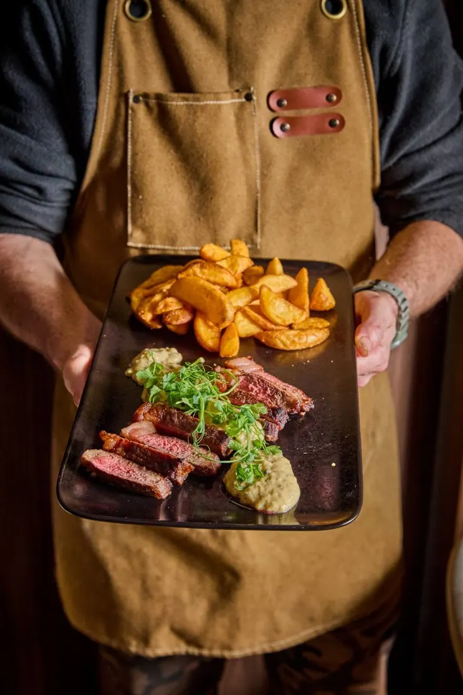
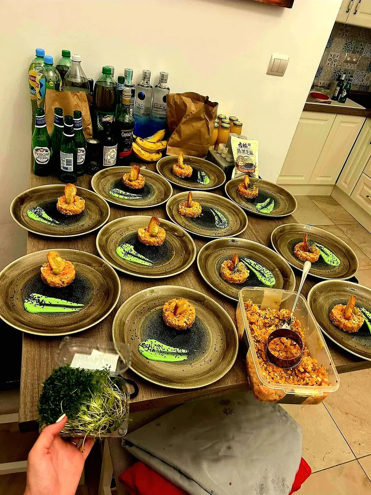
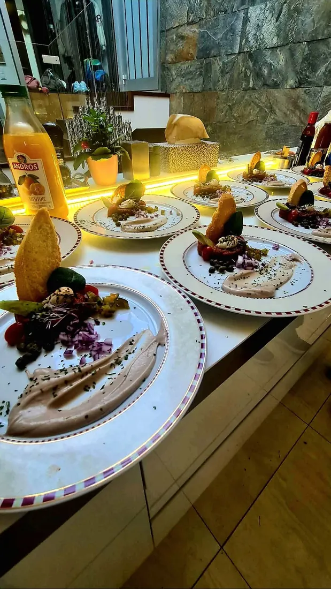

Privátséf
Éttermi élmény
otthon.
Éttermi minőségű vacsora a saját otthonodban — Budapesten, Bécsben és Pozsonyban.
Budapest · Bécs · Pozsony
Rólam
Egy séf, egy asztal, egy este.
Hivatásos privátséf vagyok, több mint 20 év à la carte és catering tapasztalattal. Az éttermi színvonalat és a gondosan komponált tányérokat viszem el hozzád — a te konyhádba, a te asztalodhoz.
Nálam a színek, az ízek és a textúrák egyensúlya számít: minden fogás egy apró kompozíció, amit együtt, nyugodtan élvezhettek.
- 20+év tapasztalat
- 4–5–6fogásos egyedi menü
- 5★sok vendégértékelés
Chéf Z — B. Frida
Ételek
Színek a tányéron.
Négy fejezet, négy színvilág — válogatás a séf munkáiból.
Zöld
Fű, gyógynövény, frissesség.
Tűz
Meleg, aranyló, bőkezű.
Rubin & Indigó
Mély színek, merész kontraszt.
Krém
Csendes, finom, légies.
Kínálat
Minden alkalomra, minden ízlésre.
Konyha
- Kortárs fúziós
- Nemzetközi klasszikusok
- Tenger gyümölcsei
- Olasz
- Japán
- Magyar
- Vegetáriánus & vegán
Művészi tálalással — kérésre a gasztronómia történetéről is mesélek az asztalnál. Allergiákat és speciális étrendet mindig figyelembe veszek.
Alkalmak
- Családi és baráti vacsora
- Gyerekmenü
- Borpárosítás
- Születésnapi torta
- Karácsonyi vacsora
- Kerti party, BBQ
- Céges rendezvény
A saját otthonodban, bérelt lakásban vagy Airbnb-ben — oda megyek, ahol te vagy.

Élmény
Az étterem, a te otthonodban.
Nincs asztalfoglalás, tömeg, parkolás és várakozás — gyerekekkel, nagy családdal vagy sok baráttal sem.
-
I
Személyes egyeztetés
Gyors, közvetlen kommunikáció: elmondod az alkalmat, a létszámot és az ízlésedet.
-
II
Egyedi menü
4–5–6 fogásos menü, pontosan rád szabva — allergiák és étrendi kívánságok figyelembevételével.
-
III
Főzés a helyszínen
A te konyhádban főzök és tálalok, te pedig a vendégeiddel foglalkozhatsz.
-
IV
Rend a végén
Szerviz után teljes takarítás: nincs piszkos edény, nincs felfordulás.

Egy konyha,
sok tányér.

Kapcsolat
Kérj ajánlatot.
Írd meg az alkalmat, a dátumot, a vendégek számát és az esetleges allergiákat — gyorsan válaszolok.
info@private-chef.hu+36 30 298 7478 · WhatsApp
privátséf.com · private-chef.hu